Visor
E
Índice
Elastasa
Encefalina, Leu- (YGGFL)
Encefalina, Met- (YGGFM)
Enoil-CoA, trans-2-
Epoxiescualeno
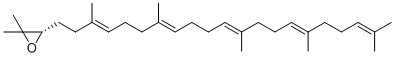
Eritrosa, D-
Eritrosa-4-fosfato, D-
Eritrulosa, D-
Escualeno
Esfingomielina
Esfingosina
Esteárico, ácido
Estradiol, 17
-b
-
Etanal o Acetaldehido
Etano, confomación alternante
Etano, confomación eclipsada
Etanol
Eteno o Etileno
Etilamina
Etilendiamina
Etilenglicol
Etino o Acetileno
F
Índice
Farnesol
Fenantreno
Fenilalanina, L-
Fenil galactósido,
a-
Fenil galactósido,
b-
Fenol
Flavin adenil dinucleótido (FAD), forma oxidada
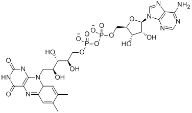
Flavin adenil dinucleótido (FADH
), forma reducida
Flavin mononucleótido (FMN), forma oxidada
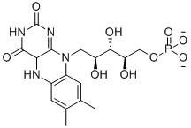
Flavin mononucleótido (FMNH
2
), forma reducida
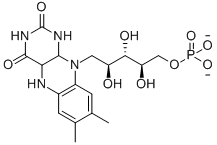
Fólico, ácido
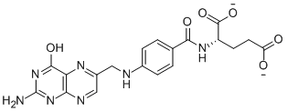
Formamido imidazol carboxamida ribonucleótido
formil glicinamida ribonucleótido
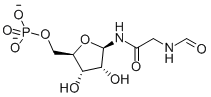
Formilglicinamidina ribonucleótido
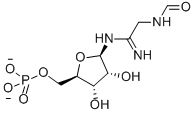
Formil tetrahidrofolato, N5-
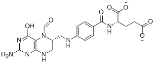
Formil tetrahidrofolato, N10-
Formimino tetrahidrofolato, N5-
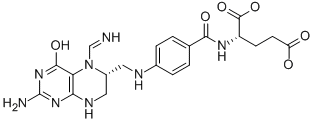
Fosfatidil colina (lecitina)
Fosfatidil etanolamina
Fosfatidil glicerol
Fosfatidil inositol
Fosfatidil inositol 4,5 bisfosfato
Fosfatidil serina
Fosfato inorgánico (orto-)
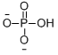
Fosfoadenosil-5'-fosfosulfato, 3'- (PAPS)l
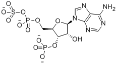
Fosfocolina
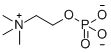
Fosfoenol piruvato
Fosfoglicerato, 2-
Fosfoglicerato, 3-
Fosfogluconato, 6-
Fosfomevalonato, 5-
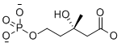
Fosfopanteteína
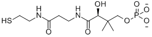
Fosforribosil amina
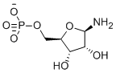
Fosforribosil glicinamida
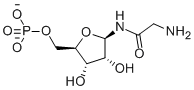
Fosforribosil 1'-difosfato, 5'-
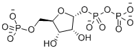
Fructosa, D-, forma abierta
Fructosa, D-, forma furanósica
a
Fructosa, D-, forma furanósica
b
Fructosa-1,6-bisfosfato, D-
Fructosa-6-fosfato, D-
Fucosa, L-
Fullereno, C60
Fullereno, C70
Fumarato
Índice
 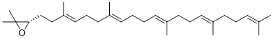
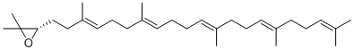


 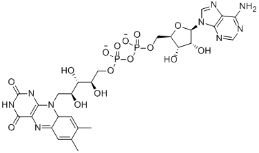
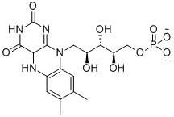
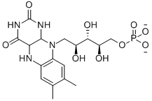
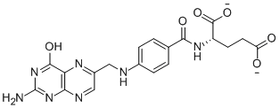
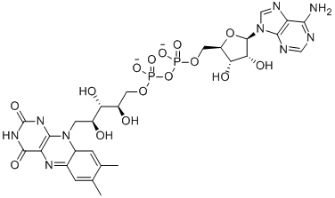
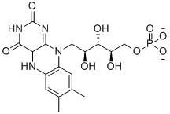
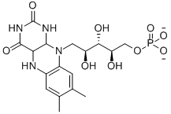
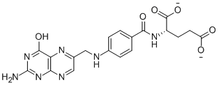
 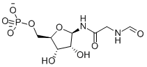
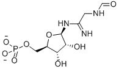
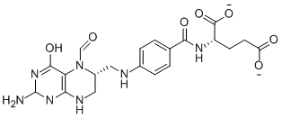
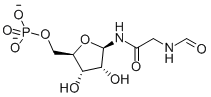
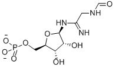
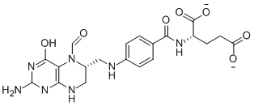
 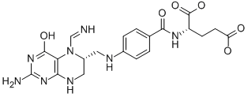
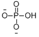
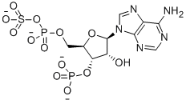
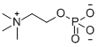
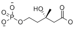
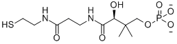
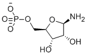
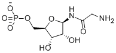
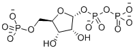
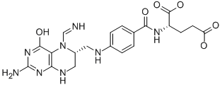
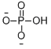
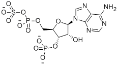
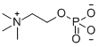
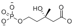
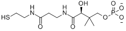
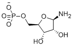
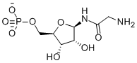
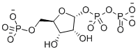